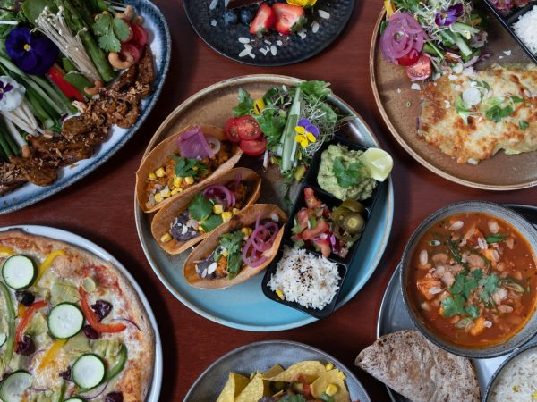
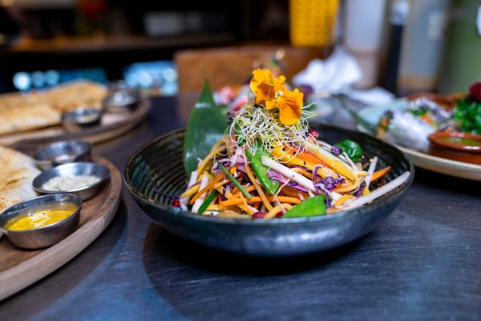
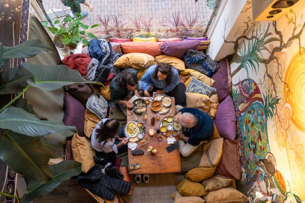

Op locatie
Organiseer je een evenement op een externe locatie? Van intieme diners tot grotere groepsbijeenkomsten: we stemmen onze service en gerechten af op jouw wensen en het type evenement, van menu-opbouw tot praktische details.
Utrechtsestraat 126, Amsterdam
Geen vlees, vis of eieren: wij koken met groenten, fruit, granen en bonen. Van Indiase thali tot Mexicaanse tortilla’s en Thaise curry, en veel gerechten zijn ook vegan of glutenvrij.


Wij gebruiken geen vlees, vis of eieren in onze gerechten. Wij koken alleen met groenten, fruit, granen en bonen, en soms met zuivel in onze lacto-vegetarische recepten. We proberen onze gerechten zoveel mogelijk aan te passen aan de echte behoeften van ons lichaam.
Op verzoek kunnen we meestal ook op andere dagen een lunchreservering aannemen.
Bel ons of stuur een mail, dan zorgen we dat er een plek voor je klaarstaat.

Golden Temple is de perfecte plek voor een etentje met een grotere groep. Op onze eerste verdieping kun je gezellig lunchen of dineren met zo’n 30 personen. Door de opstelling van de tafels ontstaat er veel interactie tussen de gasten.
Voor groepen vanaf 10 personen werken we met een speciaal samengesteld groepsmenu, zodat iedereen kan proeven van onze vegetarische en vegan gerechten. Ook tijdens onze gewone openingstijden ontvangen we groepen met plezier.
Bel of mail ons en vertel over je wensen.
Van festival tot bruiloft en van zakenlunch tot verjaardag: wij brengen onze keuken naar jouw evenement, in Amsterdam en omgeving.
Organiseer je een evenement op een externe locatie? Van intieme diners tot grotere groepsbijeenkomsten: we stemmen onze service en gerechten af op jouw wensen en het type evenement, van menu-opbouw tot praktische details.
Thuis iets bijzonders organiseren zonder zelf uren in de keuken te staan? Ideaal voor een feest, jubileum of gezellige avond met vrienden en familie. Wij zorgen dat het eten past bij jouw gasten en de gelegenheid.
Elke aanvraag is uniek. We maken een voorstel dat past bij jouw wensen, het aantal gasten en het soort evenement, zodat je precies weet waar je aan toe bent. Met gerechten die niet alleen goed smaken, maar ook goed voelen.
Naast soul food organiseert Golden Temple ook activiteiten. We hebben regelmatig kirtanworkshops, yogalessen, op vrijdag livemuziek en af en toe een feestje.
Bekijk de events+31 (0)20 62 68 560
info@restaurantgoldentemple.com
Elke dag geopend vanaf 16.30, zaterdag en zondag vanaf 13.00.
Keuken open van 16.30 tot 22.00, zaterdag en zondag vanaf 13.00.